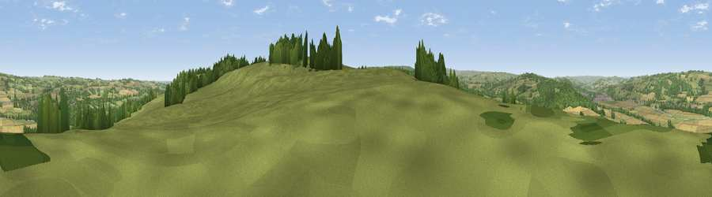

Viewpoint near Corbridge
#11690 in England · top 22% of its area beats it · near CorbridgeThe view, rendered

A 360° render of this exact spot computed from the terrain model, tree cover and land cover — summer colours, afternoon light, calibrated against photographs of famous viewpoints. Real trees, hedges and buildings will differ in detail.
The panorama
Grey silhouette: terrain skyline in each direction (720 bearings, Earth curvature and refraction included). Dashed green: skyline with trees (+15 m) and buildings (+8 m) as obstacles. Blue strip: how far the ground is visible on each bearing.
Where the view opens
Wedge length = distance to the farthest visible ground on that bearing (vegetation-aware). Rings at 10, 25 and 50 km.
What fills the view
43% grassland · 30% cropland · 24% woodland · 2% built-up
Angular shares of the visible panorama (visual magnitude), not map area. Landscape diversity 0.51 (0–1 Shannon).
Key numbers
More beautiful places nearby
The staircase of upgrades: each row has a higher view potential than everything closer. Driving times are estimates from straight-line distance, calibrated against real road routing — check an actual route before setting out.
| Place | Direction | Drive | Score |
|---|---|---|---|
| Viewpoint near Oakwood | NNW · 5 km | ~10 min | 67.3 |
| Viewpoint near Slaley | SSE · 8 km | ~16 min | 69.8 |
| Viewpoint near Fourstones | NW · 9 km | ~18 min | 71.4 |
| Viewpoint near Hedley on the Hill | ESE · 12 km | ~23 min | 71.5 |
| Viewpoint near Greenside | E · 14 km | ~26 min | 74.2 |
| Pontop Pike | ESE · 19 km | ~33 min | 77.8 |
| Viewpoint near Thropton | N · 36 km | ~55 min | 81.8 |
| Dove Crag | N · 37 km | ~55 min | 82.3 |
54.95646, -2.03237 · source: screening · position refined by local search. Computed location — check access rights before visiting.